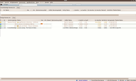
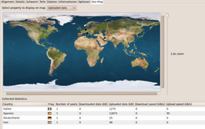
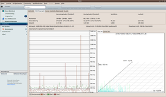
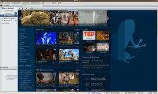
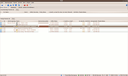
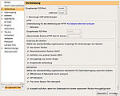

Vuze
Dieser Artikel wurde für die folgenden Ubuntu-Versionen getestet:
Dieser Artikel ist mit keiner aktuell unterstützten Ubuntu-Version getestet! Bitte diesen Artikel testen und das getestet-Tag entsprechend anpassen.
Zum Verständnis dieses Artikels sind folgende Seiten hilfreich:
Vuze  ist eine auf Java basierende Software für das BitTorrent-Netzwerk und unterstützt daher eine Vielzahl von Plattformen, die Java-kompatibel sind (z.B. Mac OS X, Windows, Linux und PSP, PS3, iPhone, XBox 360). Das Programm ging aus dem Open Source Projekt Azureus hervor, das 2008 in Vuze umbenannt wurde (s.u.). Dem ehemalig reinen Bittorrent-Programm wurde ein Medienplayer hinzugefügt und eine Anbindung an das Vuze HD Netzwerk implementiert. Das HD Netzwerk ist ein Peer-to-Peer Netzwerk, das sich ganz dem Austausch von HD-Filmen verschrieben hat.
ist eine auf Java basierende Software für das BitTorrent-Netzwerk und unterstützt daher eine Vielzahl von Plattformen, die Java-kompatibel sind (z.B. Mac OS X, Windows, Linux und PSP, PS3, iPhone, XBox 360). Das Programm ging aus dem Open Source Projekt Azureus hervor, das 2008 in Vuze umbenannt wurde (s.u.). Dem ehemalig reinen Bittorrent-Programm wurde ein Medienplayer hinzugefügt und eine Anbindung an das Vuze HD Netzwerk implementiert. Das HD Netzwerk ist ein Peer-to-Peer Netzwerk, das sich ganz dem Austausch von HD-Filmen verschrieben hat.
Vuze ist der Name der Firma, die hinter vuze.com und dem Vuze HD Netzwerk steht und deren Mitarbeiter selbst alle Azureus-Entwickler sind. Vuze fügte dem "Kernprogramm" Azureus bestimmte Funktionen hinzu (LAN Peer Finder, eingebauter Tracker, Download-Korb, Übertragungsleiste und das Generieren von Statistiken) und schuf eine neue Oberfläche für das Programm. Die Entwickler betreuen Azureus weiterhin, weigern sich aber, zwei verschiedene Versionen zu veröffentlichen. Wenn man den Vuze-Überbau nicht haben möchte, kann man gemäß Anleitung weiter unten die genannten Funktionen abschalten und die Azureus-Oberfläche benutzen, die auch weiterhin gepflegt wird.
|  |
| Übersicht Torrents |
|  |
| Details zum Torrent |
|  |
| Übertragungsstatistik |
|  |
| HD-Netzwerk |
| Space HD Portal |
Funktionsübersicht¶
Ein Erklärung der Abkürzungen und Fachbegriffe in folgender Tabelle findet sich unter dem Glossar auf der offiziellen BitTorrent-Seite und zum Teil gut erklärt in der Wikipedia.
UPnP (optional: UPnP Media Server)
Distributed DB P2P-Netzwerk via DHT (serverlos) und PEX (Peer Exchange)
IP-Filter
eingebetteter Tracker (Veröffentlichen und Hosten möglich)
RSS-Abo von Torrents
LAN Peer Finder (findet andere Nutzer im lokalen Netz und tauscht Daten im LAN statt über das Internet)
Freund-Beschleunigung (bestimmte "befreundete" IPs werden beim Datenverteilen bevorzugt)
IRC-Client (optional per Plugin)
VideoPlayer
Hinweis:
Der Videoplayer lässt sich in Linux noch nicht benutzen. Laut Vuze wird eine Linux-Unterstützung ausdrücklich ins Auge gefasst. Man kann problemlos heruntergeladenen Filme, auch aus dem HD-Netzwerk, in einem externen VideoPlayer öffnen. Mit  "Rechtsklick auf den gewünschten Torrent -> Öffne Datei -> Abspielen" wird der Standard-Mediaplayer aufgerufen und der Film abgespielt.
"Rechtsklick auf den gewünschten Torrent -> Öffne Datei -> Abspielen" wird der Standard-Mediaplayer aufgerufen und der Film abgespielt.
Über das Plugins-Menü ist es möglich, sehr einfach zusätzliche Erweiterungen zu installieren und damit den Funktionsumfang von Vuze zu erhöhen. Beliebt sind zum Beispiel "SafePeer" und "Country Locator". Plugins kann man entweder über "Tools -> Plugins -> Plugins installieren" auswählen oder manuell herunterladen  und wie weiter unten beschrieben installieren.
und wie weiter unten beschrieben installieren.
Voraussetzungen¶
Um Vuze nutzen zu können, benötigt man eine Java-Laufzeitumgebung (JRE). Hier eignen sich entweder das OpenJDK oder Oracle Java (von den Entwicklern empfohlen).
Installation¶
Vuze ist in den offiziellen Paketquellen enthalten. Es wird über das folgende Paket installiert [3]:
vuze (universe)
 mit apturl
mit apturl
Paketliste zum Kopieren:
sudo apt-get install vuze
sudo aptitude install vuze
Dabei wird ein Eintrag im GNOME-Menü unter "Anwendungen -> Internet" angelegt.
Experten-Info:
Das Paket vuze installiert azureus als Abhängigkeit mit. Das Paket azureus allein liefert eine veraltete Version, die sich aktualisieren will. Sie kann nur durch ein aufwändiges Workaround und unter Verwendung von Root-Rechten aktualisiert werden. Dieses Sicherheitsrisiko lässt sich vermeiden, indem man das Paket vuze benutzt und ggf. prüft, ob azureus ebenfalls installiert ist. Möchte man "nur" Azureus installieren, folgt man am Besten der Anleitung im nächsten Abschnitt.
Tipps¶
Vuze in Azureus verwandeln¶
 Möchte man "nur" Azureus benutzen, wählt man zunächst die klassische Oberfläche:
"Tools -> Konfiguration -> Oberfläche -> Start" auswählen.
Danach den Knopf "Anzeigen" neben "Zeige Oberflächen"-Auswahl drücken und "klassische Oberfläche" auswählen.
Möchte man zurück wechseln, drückt man einfach auf den "UI"-Knopf rechts oben im Azureus Hauptfenster.
Ferner kann man zusätzlich im Menü "Tools -> Konfiguration -> Plugins" folgende Plugins deaktivieren:
Embedded Media Player (azemp): Mit diesem Plugin werden Videos in der Vuze-Oberfläche abgespielt.
Freunde (azbuddy): Dieses Plugin funktioniert auch noch mit der "Azureus"-UI, wird aber hauptsächlich über die Vuze-UI konfiguriert.
UPnP Media Server (azupnpav): Dieses Plugin erlaubt es, heruntergeladene Inhalte anderen UPnP-kompatiblen Geräten zur Verfügung zu stellen.
Netzwerk Status (aznetstat): Nützlich für die Konfiguration der Netzwerk-Verbindung.
Anschließend hat man ein komplettes Open Source Programm namens Azureus, das man jederzeit wieder analog zur obigen Anleitung in Vuze verwandeln kann.
Pfad zu Konfigurationsdateien ändern¶
Normalerweise findet man die Konfigurationsdateien von Vuze unter ~/.azureus/. Möchte man einen anderen Ordner verwenden, so muss in der Befehlszeile ein zusätzlicher Parameter angegeben werden.
Der Befehl lautet für das Terminal [1]:
azureus -Dazureus.config.path=/PFAD/ZUM/ORDNER/
Problembehebung¶
Plugins installieren¶
Funktioniert die Installation über "Tools -> Plugins -> Plugins installieren" nicht, kann man gewünschte Plugins herunterladen. Anschließend muss im Plugins-Ordner von azureus für jedes einzelne Plugin ein neues Verzeichnis mit dem Namen des Plugins angelegt werden.
Der Befehl lautet [1]
mkdir ~/.azureus/plugins/<Name des Plugins>
Danach wird das heruntergeladene Plugin (und evtl. zusätzliche Dateien) in das eben erstellte Verzeichnis kopiert und Vuze neu gestartet.
FAT32 Partition¶
Um große Downloads (> 4 GiB) auf einer FAT32-Festplatte zu speichern, muss man in Vuze unter "Tools -> Konfiguration -> Dateien -> Speicherplatz inkrementell reservieren" aktivieren. Ansonsten wird man eine Fehlermeldung wie
"Operation not permitted, setLength fails (allocateFiles...) errors during file allocation."
zu sehen bekommen.
Disk read error¶
Es kann vorkommen, dass Vuze nach unbestimmter Zeit Downloads abbricht und eine "Disk read error" Meldung bringt. Dies liegt normalerweise an der Java-Version. Man sollte die installierte Version gemäß Java/Tipps überprüfen und ggf. eine andere nachinstallieren.
NAT-Problem¶
Es kann auch vorkommen, dass vor den Torrents keine grünen Smilies gezeigt werden sondern nur blaue oder gelbe. Abhilfe kann hier die Verwendung von bestimmten Trackern schaffen. Diese Einstellungen sollten klappen.
"Tools -> Konfiguration -> Verbindung" 
eingehender TCP-Port
10181UDP-Port
10181
Das Beispielbild zeigt die möglichen Einstellungen.
Die Tracker sollten in jedem Torrent eingefügt werden, sofern sie nicht vorhanden sind. Einfach hier kopieren und in die Trackerliste einfügen. Es sollten sich ca. 10 Tracker in der Liste befinden, dann ist eine gute Verbindung möglich.
udp://tracker.openbittorrent.com:80 udp://tracker.openbittorrent.com:80/announce udp://tracker.openbittorrent.com:80/announce.php http://genesis.1337x.org:1337/announce http://exodus.1337x.org/announce http://tracker.ilibr.org:6969/announce http://tracker.token.ro/announce http://11.rarbg.com/announce http://10.rarbg.com/announce http://denis.stalker.h3q.com/announce http://photodiode.mine.nu/announce http://tracker.publicbt.com/announce http://9.rarbg.com:2710/announce http://tracker.publicbt.org/announce http://tracker.torrentbay.to:6969/announce http://tracker.torrentalk.com:2710/announce http://tracker.openbittorrent.com:6969/announce udp://10.rarbg.me:80/announce udp://11.rarbg.com/announce udp://11.rarbg.com:80/announce udp://11.rarbg.me:80/announce udp://9.rarbg.com:2710/announce udp://9.rarbg.me:2710/announce udp://bt.rghost.net:80/announce udp://coppersurfer.tk:6969/announce udp://cpleft.com:2710/announce udp://exodus.desync.com/announce udp://exodus.desync.com:6969 udp://fr33dom.h33t.com:3310/announce udp://fr33domtracker.h33t.com:3310/announce udp://pow7.com:80/announce udp://pubt.net:2710/announce udp://puto.me:6969/announce udp://tobn.org:6969/announce udp://torrentbay.to:6969/announce udp://tracker.1337x.org:80/announce udp://tracker.ccc.de:80 udp://tracker.ccc.de:80/announce udp://tracker.com:2710/announce udp://tracker.coppersurfer.tk:6969/announce udp://tracker.ex.ua:80/announce udp://tracker.ilibr.org:80/announce udp://tracker.istole.it:80 udp://tracker.istole.it:80/announce udp://tracker.novalayer.org:6969/announce udp://tracker.openbittorrent.com/announce udp://tracker.prq.to/announce udp://tracker.prq.to:80/announce udp://tracker.publicbt.com/announce udp://tracker.publicbt.com:80 udp://tracker.publicbt.com:80/announce udp://tracker.publichd.eu/announce udp://tracker.yify-torrents.com/announce udp://tracker.yify-torrents.com:80/announce
Nach dem Einfügen der Tracker Vuze neu starten. Vuze sollte mindestens 15 min. laufen, bis alle Verbindungen aufgebaut wurden. Dann können die Smilies nach und nach ihre Farbe ändern. Aber auch wenn die Smilies grün sind, hat das keine Auswirkungen auf den Torrent, es zeigt nur, dass die Verbindungen funktionieren.

 Programmübersicht
Programmübersicht- Erstellt mit Inyoka
-
 2004 – 2017 ubuntuusers.de • Einige Rechte vorbehalten
2004 – 2017 ubuntuusers.de • Einige Rechte vorbehalten
Lizenz • Kontakt • Datenschutz • Impressum • Serverstatus -
Serverhousing gespendet von